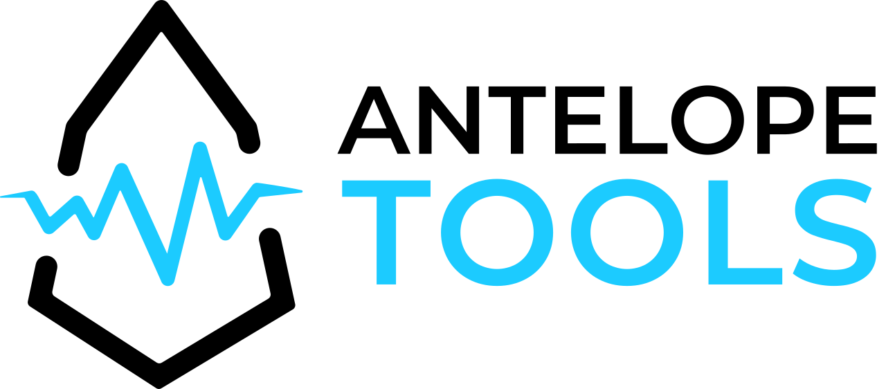

Open Infrastructure Data for the Antelope Ecosystem
Live block producer, node, endpoint and reward data for every major Antelope chain. Choose a network to open its dashboard.

Live block producer, node, endpoint and reward data for every major Antelope chain. Choose a network to open its dashboard.